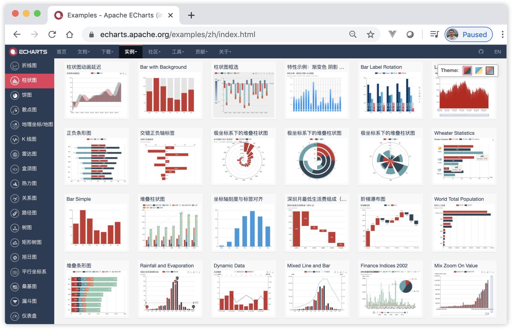
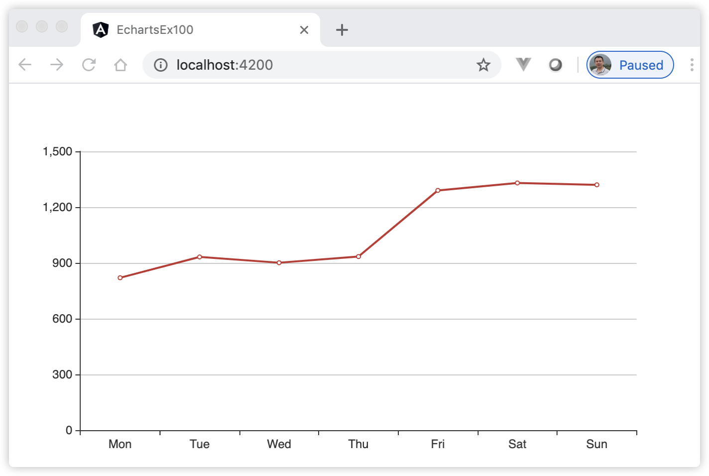
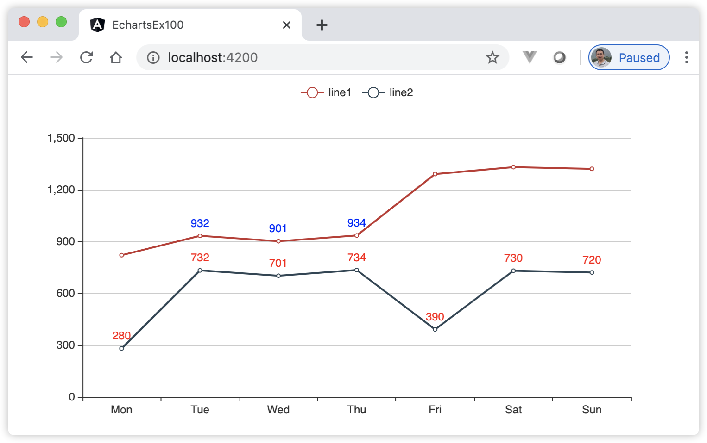
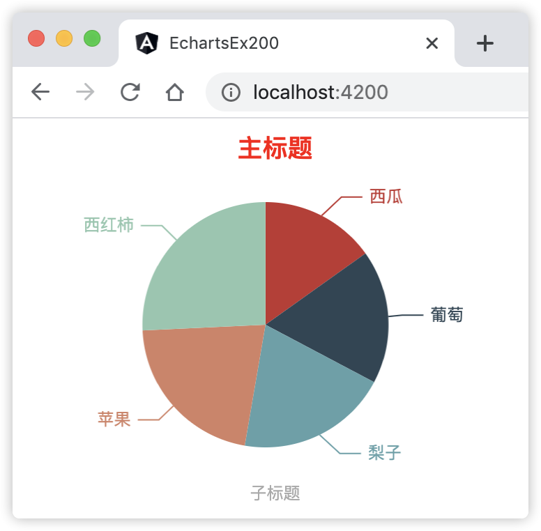
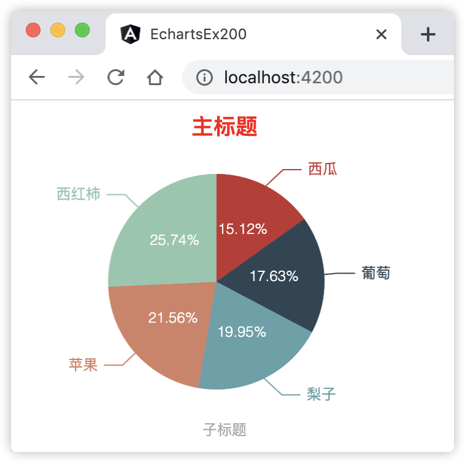
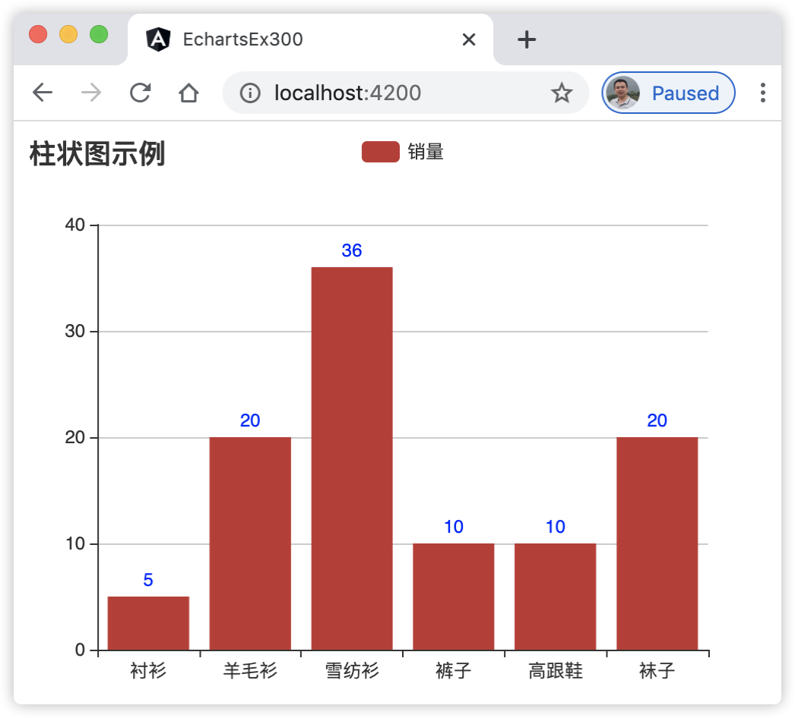

20 在Angular项目中使用图表¶
现在越来越多的需求要求数据可视化，即将页面上的数据信息转化为图形界面，并提供可交互式的访问。在页面上添加图表来表示数据，可以增强用户的体验，提升页面上的整体醒目价值。使用Echarts图表库，我们可以在网页应用中创建出交互性强、响应性强、外观精美的，且具有丰富动画的图表。
20.1 为什么选择Echarts图表库¶
Echarts是一个由社区提供的开源图表库，有许多贡献者参与开发和维护，并由Apache开源基金会支持。这些图表可以在很大程度上进行配置，而且，它可以很容易地将不同类型的图表合并到一个单一的呈现形式。使用Echart库可以构建各种各样的图表，包括线状图、条形图、饼状图、散点图、基于地理/地图的图表、雷达图、热力图、仪表图、三维图、树状图等等，读者可以前往其官方网站上查阅详细的信息，其官方网站如图20-1所示。
图20-1 Echarts图表库的官方网站
{kind=link}
Echarts是基于Javascript的图表库，它为Web应用程序提供了多种高度可定制的图表选项。其对应的Angular项目为ngx-echarts。ngx-echarts包模块是专门为Angular项目定制的，它可以用来在使用Angular框架的react应用程序中构建基于echarts库的图表。
目前市面上有很多图表库，比较著名的有ngx-charts、ngx-echarts、ng2-charts，angular-plotly.js和PrimeNG Charts图表库，本书选取ngx-echarts作为讲解的图表库，主要原因是它的图表种类比较丰富，其次，它是开源的。
20.2 安装及使用ngx-echarts图表库¶
ngx-echarts基于Echarts图表库，因此首先需要安装Echarts，然后再安装ngx-echarts，具体命令如下：
npm install echarts -S npm install ngx-echarts -S npm install @types/echarts -S # 可选的，方便开发时，在编辑器中提供代码提示功能，查询源码
使用ngx-echarts图表库前，首先需要在根模块中导入NgxEchartsModule模块，示例代码如下：
import { NgxEchartsModule } from 'ngx-echarts'; /** * 下面将导入echarts中所有的模块，也可以单独导入具体的模块 * */ import * as echarts from 'echarts'; @NgModule({ imports: [ NgxEchartsModule.forRoot({ echarts, }), ], }) export class AppModule {}
然后在组件模板中使用echarts指令生成图表，比如模板示例代码：
<div echarts [options]="chartOption" class="demo-chart"></div>
最后在组件类中组装好对应的数据，如下示例代码片段：
import { EChartOption } from 'echarts'; chartOption: EChartOption = { xAxis: { type: 'category', data: ['Mon', 'Tue', 'Wed', 'Thu', 'Fri', 'Sat', 'Sun'], }, yAxis: { type: 'value', }, series: [ { data: [820, 932, 901, 934, 1290, 1330, 1320], type: 'line', }, ], };
上述代码中，EChartOption对象中有个3个属性：xAxis、yAxis和series，它们的说明如下：
xAxis表示直角坐标系 X 轴，它的子属性type表示坐标轴类型，该属性是可选的，如果没有设置 type，但是设置了 data，则默认为 type 是 “category”。type的值可以有下面4种：
值为”value”，表示是数值轴，适用于连续数据；
值为”category”，表示是类目轴，适用于离散的类目数据。类目数据可自动从 series.data 或 dataset.source 中取，或者可通过 xAxis.data 设置类目数据；
值为”time”，表示是时间轴，适用于连续的时序数据，与数值轴相比时间轴带有时间的格式化，在刻度计算上也有所不同，例如会根据跨度的范围来决定使用月，星期，日还是小时范围的刻度；
值为”log”，表示是对数轴。适用于对数数据。
xAxis的子属性data表示显示在 X 轴上的数据。如果设置了 type 是 “category”，但没有设置 data，则 xAxis.data 的内容会自动从 series.data 中获取，这在实际应用中比较常见；关于xAxis的子属性除了上面介绍的这2个外还有其他的子属性，读者可以前往官方网站上查阅；
yAxis表示直角坐标系 Y 轴，它的子属性type同xAxis的子属性type取值是一致的；
series（系列）是指一组系列数值，每个系列通过 type 决定它的图表类型，通过data指定具体的数据。
接下来，我们用示例来对几种常用类型的图表进行详细讲解。
20.3 [示例 echarts-ex100] 使用ngx-echarts生成折线图¶
折线图是最常见的一种表达数据和时间序列之间的关系，关心数据如何随着时间变化而变化，每周、月、年的变化趋势是增长、减少、上下波动或基本不变，这时候使用折线图更好地表现指标随时间呈现的趋势。
用Angular CLI构建应用程序，具体命令如下：
ng n echarts-ex100 -S --defaults=true
启动服务，具体命令如下：
ng serve
查看应用程序结果。打开Web浏览器并浏览到 “http://localhost:4200”，应该看到文本 “Welcome to echarts-ex100!”。
安装ngx-echarts图表库，具体命令如下：
npm install echarts -S npm install ngx-echarts -S npm install @types/echarts -S
导入NgxEchartsModule模块。编辑根模块类文件src/app/app.module.ts，并将其更改为以下内容：
import { BrowserModule } from '@angular/platform-browser'; import { NgModule } from '@angular/core'; import { AppComponent } from './app.component'; import * as echarts from 'echarts'; import { NgxEchartsModule } from 'ngx-echarts'; @NgModule({ declarations: [ AppComponent ], imports: [ BrowserModule, NgxEchartsModule.forRoot({ echarts }) ], providers: [], bootstrap: [AppComponent] }) export class AppModule { }
编辑组件。编辑文件src/app/app.component.ts，并将其更改为以下内容：
import { Component, OnInit } from '@angular/core'; import { EChartOption } from 'echarts'; @Component({ selector: 'app-root', templateUrl: './app.component.html', styleUrls: ['./app.component.css'] }) export class AppComponent implements OnInit { title = 'echarts-ex100'; chartOption: EChartOption; ngOnInit(): void { this.chartOption = { xAxis: { type: 'category', data: ['Mon', 'Tue', 'Wed', 'Thu', 'Fri', 'Sat', 'Sun'], }, yAxis: { type: 'value', }, series: [ { data: [820, 932, 901, 934, 1290, 1330, 1320], type: 'line', }, ], }; } }
编辑组件模板。编辑文件src/app/app.component.html，并将其更改为以下内容：
<div echarts [options]="chartOption" class="demo-chart"></div>
观察应用程序页面，页面显示效果如图20-2所示：
图20-2 使用ngx-echarts生成折线图
{kind=link}
添加数字显示。编辑文件src/app/app.component.ts，修改series属性部分，并将其更改为以下内容：
series: [ { data: [820, 932, 901, 934, 1290, 1330, 1320], type: 'line', itemStyle: { normal: { label: { show: true, position: 'top', color: 'blue', // 在上方显示蓝色的数字 } } }, }, ],观察应用程序页面，折线的上方显示出所有的数字，且数字的颜色为蓝色。
自定义显示效果，过滤部分数字显示。编辑文件src/app/app.component.ts，修改series属性部分，并将其更改为以下内容：
series: [ { data: [820, 932, 901, 934, 1290, 1330, 1320], type: 'line', itemStyle: { normal: { label: { show: true, position: 'top', color: 'blue', // 在上方显示蓝色的数字 formatter: function (params, ticket, callback) { // 自定义函数，过滤及显示部分数字 let n = params.value; if (n < 1200 && n > 900) { // 仅显示区间位于（900，1200）之间的数值 return n; } else { return ''; } } } } }, }, ], 观察应用程序页面，折线的上方仅显示出区间内的数字。
添加多组数字。编辑文件src/app/app.component.ts，并将其更改为以下内容：
import { Component, OnInit } from '@angular/core'; import { EChartOption } from 'echarts'; @Component({ selector: 'app-root', templateUrl: './app.component.html', styleUrls: ['./app.component.css'] }) export class AppComponent implements OnInit { title = 'echarts-ex100'; chartOption: EChartOption; ngOnInit(): void { this.chartOption = { xAxis: { type: 'category', data: ['Mon', 'Tue', 'Wed', 'Thu', 'Fri', 'Sat', 'Sun'], }, yAxis: { type: 'value', }, legend: { data: ['line1', 'line2'], align: 'left', }, series: [ { name: 'line1', data: [820, 932, 901, 934, 1290, 1330, 1320], type: 'line', itemStyle: { normal: { label: { show: true, position: 'top', color: 'blue', // 在上方显示蓝色的数字 formatter: function (params, ticket, callback) { let n = params.value; if (n < 1200 && n > 900) { return n; } else { return ''; } } } } }, }, { name: 'line2', data: [280, 732, 701, 734, 390, 730, 720], type: 'line', itemStyle: { normal: { label: { show: true, position: 'top', color: 'red', // 在上方显示红色的数字 } } }, }, ], }; } }
观察应用程序页面，页面最终显示效果如图20-3所示：
图20-3 使用ngx-echarts生成折线图，并自定义显示效果
{kind=link}
在上面的步骤中，完成了以下内容：
安装了ngx-echarts图表库，并项目的根模块中导入图表库的NgxEchartsModule模块；
步骤6和7引用的是官方的一个示例，在组件的OnInit()方法中初始化图表；
在步骤9中通过设置series中的itemStyle属性，显示折线图上的数字和颜色；
在步骤11中通过formatter属性，使用函数进一步自定义折线图上的数字的显示，示例中是过滤掉区间外的数字，仅显示区间内的数字；
在步骤12中添加了多组数字。这里注意的是legend属性的data数组对应着series数组项中的name属性值。
此示例中演示了折线图的基本功能，在日常工作中，可能还需要些高级定制的功能，或者事件功能等，读者可以自行前往官方文档进行查阅。
20.4 [示例 echarts-ex200] 使用ngx-echarts生成饼图¶
要关注每个部分所占整体的百分比，如表达的信息包括：“份额”、“百分比”以及“预计将达到百分之多少”，这时候可以用到饼图； 饼图更适合表现数据相对于总数的百分比等关系。
创建工程及安装安装ngx-echarts图表库，步骤请参考[示例 echarts-ex100]的1到5步骤，所不同仅是创建工程时定义名称为“echarts-ex200”；
编辑组件。编辑文件src/app/app.component.ts，并将其更改为以下内容：
import { Component, OnInit } from '@angular/core'; import { EChartOption } from 'echarts'; @Component({ selector: 'app-root', templateUrl: './app.component.html', styleUrls: ['./app.component.css'] }) export class AppComponent implements OnInit { title = 'echarts-ex200'; chartOption: EChartOption; ngOnInit(): void { this.chartOption = { title: [{ text: '主标题', left: '16.67%', // 饼图离容器左侧的距离 top: 0, // 饼图离容器顶部侧的距离 textAlign: 'center', // 标题文字的对齐方式 textStyle:{ color:'red' // 标题的文字的颜色 } }, { subtext: '子标题', left: '16.67%', top: '60%', textAlign: 'center' }], series: [ { type: 'pie', radius: '55%', // 饼图的半径比例。如果是数组值 ['70%', '85%']，表示环形 center: ['50%', 60], // 饼图的中心（圆心）坐标，数组的第一项是横坐标，第二项是纵坐标 data: [ { value: 335, name: '苹果' }, { value: 310, name: '梨子' }, { value: 274, name: '葡萄' }, { value: 235, name: '西瓜' }, { value: 400, name: '西红柿' } ].sort((x, y) => x.value - y.value), // 按照value的值升序排序 animation: true, // 是否开启动画 left: 0, right: '67%', top: 80, bottom: 0, } ] }; } }
编辑组件模板。编辑文件src/app/app.component.html，并将其更改为以下内容：
<div echarts [options]="chartOption" class="demo-chart"></div>
观察应用程序页面，页面显示效果如图20-4所示：
图20-4 使用ngx-echarts生成饼图
{kind=link}
添加百分比数字显示。编辑文件src/app/app.component.ts，并将其更改为以下内容：
import { Component, OnInit } from '@angular/core'; import { EChartOption } from 'echarts'; @Component({ selector: 'app-root', templateUrl: './app.component.html', styleUrls: ['./app.component.css'] }) export class AppComponent implements OnInit { title = 'echarts-ex200'; chartOption: EChartOption; data = [ { value: 335, name: '苹果' }, { value: 310, name: '梨子' }, { value: 274, name: '葡萄' }, { value: 235, name: '西瓜' }, { value: 400, name: '西红柿' } ].sort((x, y) => x.value - y.value) // 按照value的值升序排序 ngOnInit(): void { this.chartOption = { title: [{ text: '主标题', left: '16.67%', // 饼图离容器左侧的距离 top: 0, // 饼图离容器顶部侧的距离 textAlign: 'center', // 标题文字的对齐方式 textStyle: { color: 'red' // 标题的文字的颜色 } }, { subtext: '子标题', left: '16.67%', top: '60%', textAlign: 'center' }], series: [ { type: 'pie', radius: '55%', // 饼图的半径比例。如果是数组值 ['70%', '85%']，表示环形 center: ['50%', 60], // 饼图的中心（圆心）坐标，数组的第一项是横坐标，第二项是纵坐标 data: this.data, animation: true, // 是否开启动画 left: 0, right: '67%', top: 80, bottom: 0, }, { type: 'pie', radius: '55%', // 饼图的半径比例。如果是数组值 ['70%', '85%']，表示环形 center: ['50%', 60], // 饼图的中心（圆心）坐标，数组的第一项是横坐标，第二项是纵坐标 data: this.data, left: 0, right: '67%', top: 80, bottom: 0, itemStyle: { normal: { label: { //饼图图形上的文本标签 show: true, position: 'inner', //标签的位置 textStyle: { fontWeight: 300, fontSize: 12 //文字的字体大小 }, formatter: '{d}%' // 百分比数字的格式 } } } } ] }; } }
观察应用程序页面，页面最终显示效果如图20-5所示：
图20-5 使用ngx-echarts生成饼图，并显示百分比效果
{kind=link}
在上面的步骤中，完成了以下内容：
步骤2中饼图的数据结构与上个示例中折线图中的数据结构类似，数据项的含义在代码示例中进行了详细的标注；
步骤4之前的代码为默认情况下饼图的展现形式，即默认不显示百分比数据；
步骤5中通过叠加两个饼图来达到同时显示文字和百分比的效果，即重复定义series数组的数据项，其中一个为默认显示风格，另一个添加itemStyle数据来呈现百分比数字；
20.5 [示例 echarts-ex300] 使用ngx-echarts生成柱状图¶
柱状图利用柱子的高度，能够比较清晰的反映数据的差异，一般情况下用来反映分类项目之间的比较，也可以用来反映时间趋势。
创建工程及安装安装ngx-echarts图表库，前面步骤同样请参考[示例 echarts-ex100]的1到5步骤，所不同仅是创建工程时定义名称为“echarts-ex300”；
编辑组件。编辑文件src/app/app.component.ts，并将其更改为以下内容：
import { Component, OnInit } from '@angular/core'; import { EChartOption } from 'echarts'; @Component({ selector: 'app-root', templateUrl: './app.component.html', styleUrls: ['./app.component.css'] }) export class AppComponent implements OnInit { title = 'echarts-ex300'; chartOption: EChartOption; clothes = { categories: ["衬衫", "羊毛衫", "雪纺衫", "裤子", "高跟鞋", "袜子"], data: [5, 20, 36, 10, 10, 20] } ngOnInit(): void { this.chartOption = { title: { text: '柱状图示例' }, tooltip: {}, legend: { data: ['销量'] }, xAxis: { data: this.clothes.categories }, yAxis: {}, series: [{ name: '销量', type: 'bar', data: this.clothes.data }] }; } }
编辑组件模板。编辑文件src/app/app.component.html，并将其更改为以下内容：
<div echarts [options]="chartOption" class="demo-chart"></div>
观察应用程序页面，页面显示出标准的柱状图。
添加数字显示。编辑文件src/app/app.component.ts，并将其更改为以下内容：
import { Component, OnInit } from '@angular/core'; import { EChartOption } from 'echarts'; @Component({ selector: 'app-root', templateUrl: './app.component.html', styleUrls: ['./app.component.css'] }) export class AppComponent implements OnInit { title = 'echarts-ex300'; chartOption: EChartOption; clothes = { categories: ["衬衫", "羊毛衫", "雪纺衫", "裤子", "高跟鞋", "袜子"], data: [5, 20, 36, 10, 10, 20] } ngOnInit(): void { this.chartOption = { title: { text: '柱状图示例' }, tooltip: {}, legend: { data: ['销量'] }, xAxis: { data: this.clothes.categories }, yAxis: {}, series: [{ name: '销量', type: 'bar', data: this.clothes.data, itemStyle: { normal: { label: { show: true, position: 'top', color: 'blue', // 在上方显示蓝色的数字 } } } }] }; } }
观察应用程序页面，页面最终显示效果如图20-6所示：
图20-6 使用ngx-echarts生成柱状图，并显示数字
{kind=link}
通过上面的示例可以看出，柱状图和折线图的数据结构类似，可以直接将示例echarts-ex300中series元素的type属性换成“line”，它就生成了一个折线图。
20.6 小结¶
本章介绍了在Angular项目中使用图表的应用知识，详细介绍了如何安装和使用Echarts图表库，并带领读者通过示例演示了生成3种类型的图表的详细步骤。